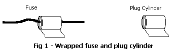
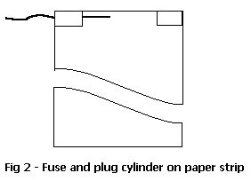
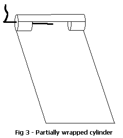
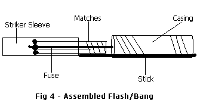

Tom Spooner
Okay, finally: Boom today.
But first a little digression. So we all know about the terrorist incident of September 11, 2001. Unfortunately, that's sparked a little US gov-sponsored terrorism in turn: more wiretaps, more Carnivore (DCS 1000, or whatever it is this week), more security check points - the better to disarm you and render you harmless to the State - more BS.
I've been told that I'm a likely target for investigation, thanks to these fun little articles I write for you. I suppose that's true. In the face of terrorists using plastic box cutters to turn airliners into manned missiles, do-it-yourself pyrotechnics are obviously criminally dangerous.
BS again. Generally, what I write about amounts to toys suitable for harassing harassers, or tools for defense. Most of what I write can be found elsewhere; libraries, the internet, encyclopedias; I just put it all together for you, and separate the useable pyrotechnic wheat from the chaff.
If this makes me a threat to the State, then the State has proved that it's dangerous to the people.
You could call me a libertarian. I definitely operate under the Non-Aggression Principle. I'm no threat to anyone who doesn't threaten me first. Now, if the gov does decide to look into my background, perhaps they'd like to explain just what they've done to me that would make me a threat to them. Maybe they know something I don't. Yet.
Okay; lecture over. Let's make something go bang.
A flash/bang is a small explosive device - basically an over-sized firecracker - used to distract or disorient someone. They make lots of light and noise, but are otherwise mostly harmless. Jackbooted thugs are fond of using them to throw their victims off stride during 'dynamic entry' raids.
Now you can return the favor. I'm going to show you how to construct a small flash/bang grenade.
*Materials:*
Starting with the paper, make several strips. You'll need:
Take a 1/2" x 11" strip and wrap it around your fuse, 1" from the end. Wrap it tightly. As you go, apply a very thin layer of glue to the paper - just enough to make the roll stay tight.
Next, take the 1/2" x 5 1/2" strip - and the sparing application of glue, as above - and roll a small tight cylinder. Then wrap the remaining 1/2" x 11" strip around that tiny cylinder, using the thin layer of glue, of course. The idea is to make the cylinder as close to the same diameter as the paper-wrapped fuse as possible.

Let the pieces dry for a bit, then move to the next step.
Take one 2.5" x 11" strip and glue the paper-wrapped fuse and cylinder onto one end of the strip, on opposite sides, like so:

As always in this project, use the glue sparingly, or it'll take forever to dry.
Now roll the long strip partially around the fuse and cylinder to create a small semi-cylindrical 'pocket', capped by the fuse plug and cylinder plug on each end.

Carefully place 15 grains of pistol powder into the pocket you just made. Now, carefully continue wrapping the strip around the fuse, plug, and powder to fully enclose the powder. Use glue - carefully - and wrap as tightly as you can manage. When you've rolled up the entire 2.5" x 11" strip, Glue and roll the remaining 2.5" x 11" strip onto it as well. Tightly!
You may have noticed that you are now the proud owner of what looks like an over-sized firecracker. You're right; it is an over-sized firecracker, suitable for use on the Second of July and Bill of Rights Day. But as a flash/bang grenade, it lacks something. You don't want to fiddle around with a lighter when the JBTs are crashing through your door. You need an igniter. (You did read my igniter article, right?)
Here's the basic, economy version. Dismantle a book of matches. Maybe even two of 'em. Take a row of matches, still connected as a strip, and wrap it around the end of your fuse, flush with the end. Take the matchbook cover and wrap it around the matches, striking surface to the inside. It should be snug, but loose enough to be pulled off... LATER! Don't pull it yet. (Safety-challenged: If you pull it now, the fuse will probably ignite and the flash/bang will go off... in your hand, if you fail to toss it quickly enough.)
In theory, you're ready to go, as the safety warning should have indicated. BUT...
Dynamic entries are stressful times. Under pressure, you could give that matchbook cover a really strong tug and yank the fuse right out of your casing. Oops. A bad thing.
Take a popsicle stick and tape one end of it the base of the matches wrapped around the fuse. The stick should also extend down to the paper grenade case, where you will also tape it. Now when you grasp the grenade and yank the striker, the fuse is secured in place.

Congratulations, you now have a flash/bang grenade.
Did you notice that I didn't specify the fuse length? There's a reason for that. Pick a length to suit your application. Time a burn of a known length to figure the burn rate for your particular brand of cannon fuse, then use the appropriate length for your grenade.
You know... there's no reason you can't scale this device up to any size, right up to a regular field-grade ground burst simulator. For that sort of use, you might skip the fuse and use an electrical igniter (i.e., model rocket igniter or an improvised equivalent).
If you really wanted to get nasty, you could tape nails around the case of an out-sized flash/bang.
Rig these in plastic bags - weatherproofing - with trip lines, and you've got a perimeter intrusion warning.
Probably you can think of other things. Just...
Be creative.
(c)2002 Doing Freedom Magazine
http://www.doingfreedom.com/gen/0202/ht.flashbanggrenade.html